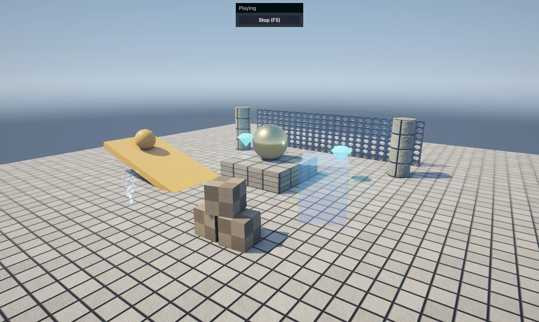

In pratica
Engine: l'editor#
I capitoli precedenti hanno costruito il livello di Marble nel codice: una funzione con una riga per scatola.
Va bene per un piccolo livello ed è una pena per dieci.
Questo capitolo aggiunge ciò che prima o poi cresce in ogni engine: un editor, un programma in cui le scene si compongono guardandole.
L'editor non è una tecnologia a parte.
È un gioco fatto con l'engine, di circa milleduecento righe, il cui gameplay è per caso modificare scene.
Lo rendono possibile tre nuovi pezzi dell'engine, e i giochi li possono usare tutti e tre: un'interfaccia utente, i file di scena e un modo di guardare una scena senza farne parte.
swift run Editor demo
./build/editor demo
Tieni premuto il tasto destro del mouse e usa W A S D per volare.
Clicca per selezionare, premi W, E o R e trascina una maniglia colorata per spostare, ruotare o scalare.
Trascina un numero di lato per cambiarlo, oppure cliccalo e scrivi.
F5 avvia la scena.

Un'interfaccia in immediate mode#
Un editor è fatto soprattutto di pannelli pieni di numeri.
Il modo consueto di costruirli è un albero di oggetti widget che vanno tenuti allineati ai dati che mostrano.
L'engine prende l'altra strada, quella resa popolare da Dear ImGui: l'immediate mode.
Non ci sono oggetti widget.
A ogni frame il programma chiama una funzione per controllo, e quella chiamata sia disegna il controllo sia riporta che cosa ne ha fatto l'utente.
Questa è l'intera sezione dell'inspector per una luce:
if var light = scene[selected, Light.self] {
if gui.section("Light") {
var type = Int(light.type.rawValue)
if gui.combo("Type", &type, ["Directional", "Point", "Spot"]) { light.type = LightType(rawValue: UInt32(type)) ?? .point }
gui.color("Color", &light.color)
gui.dragFloat("Intensity", &light.intensity, speed: 0.05, range: 0...1000)
if light.type != .directional { gui.dragFloat("Range", &light.range, speed: 0.05, range: 0.1...500) }
if light.type == .spot {
dragDegrees(gui, "Inner cone", &light.innerConeAngle, 0...89)
dragDegrees(gui, "Outer cone", &light.outerConeAngle, 0...89)
}
if light.type == .directional { gui.checkbox("Casts shadows", &light.castsShadows) }
if gui.button("Remove light") {
scene.remove(Light.self, selected)
} else {
scene[selected, Light.self] = light
}
}
}
if (Light* light = scene.get<Light>(selected_)) {
if (gui_.section("Light")) {
int type = int(light->type);
if (gui_.combo("Type", type, {"Directional", "Point", "Spot"})) light->type = LightType(type);
gui_.color("Color", light->color);
gui_.dragFloat("Intensity", light->intensity, 0.05f, 0.0f, 1000.0f);
if (light->type != LightType::Directional) gui_.dragFloat("Range", light->range, 0.05f, 0.1f, 500.0f);
if (light->type == LightType::Spot) {
dragDegrees(gui_, "Inner cone", light->innerConeAngle, 0.0f, 89.0f);
dragDegrees(gui_, "Outer cone", light->outerConeAngle, 0.0f, 89.0f);
}
if (light->type == LightType::Directional) gui_.checkbox("Casts shadows", light->castsShadows);
if (gui_.button("Remove light")) scene.remove<Light>(selected_);
}
}
Leggila come una descrizione del pannello, dall'alto in basso.
Un if intorno a una chiamata è il modo in cui un controllo compare solo quando ha senso: una portata per le luci puntiformi e gli spot, gli angoli del cono per i soli spot.
Nessun codice nasconde o mostra qualcosa; le righe che non vengono chiamate in questo frame semplicemente non ci sono.
Un controllo è piccolo.
Questa è una checkbox, completa:
@discardableResult
public func checkbox(_ label: String, _ value: inout Bool) -> Bool {
let id = makeId(label)
guard let row = nextRow() else { return false }
let field = splitRow(row, label)
let side: Float = 16
let box = Rect(position: field.position + Vec2(0, (row.size.y - side) * 0.5), size: Vec2(side, side))
let clicked = pressed(id, box)
if clicked {
value.toggle()
changed = true
}
if value {
canvas.roundedRect(box.position, box.size, radius: 4, style.accent)
icon(.check, center: box.position + box.size * 0.5, size: 12, style.chrome)
} else {
canvas.roundedRect(box.position, box.size, radius: 4, style.well)
canvas.roundedRectOutline(box.position, box.size, radius: 4, thickness: 1, hovers(box) ? style.textDim : style.raisedHot)
}
return clicked
}
bool Gui::checkbox(const std::string& label, bool& value) {
uint64_t id = makeId(label);
Rect row, field;
if (!nextRow(row)) return false;
splitRow(row, label, field);
float side = 16;
Rect box{field.position + Vec2{0, (row.size.y - side) * 0.5f}, Vec2{side, side}};
bool clicked = pressed(id, box);
if (clicked) {
value = !value;
changed_ = true;
}
if (value) {
canvas_->roundedRect(box.position, box.size, 4, style.accent);
icon(Icon::Check, box.position + box.size * 0.5f, 12, style.chrome);
} else {
canvas_->roundedRect(box.position, box.size, 4, style.well);
canvas_->roundedRectOutline(box.position, box.size, 4, 1, hovers(box) ? style.textDim : style.raisedHot);
}
return clicked;
}
Chiede la prossima riga del pannello, controlla se il mouse è stato premuto sul suo quadrato, in quel caso inverte il valore, e si disegna con il canvas dell'engine.
Il valore vive nei dati di chi chiama e da nessun'altra parte, quindi non c'è niente da sincronizzare.
Il poco che deve sopravvivere da un frame al successivo lo conserva la Gui, sotto un id calcolato dal titolo del pannello e dall'etichetta del controllo: quale controllo il mouse sta tenendo, quale campo ha la tastiera, di quanto è scorso ogni pannello.
Trascinare un numero significa che il controllo ricorda di essere "attivo" finché il pulsante non viene rilasciato, e che somma al valore il movimento del puntatore in ogni frame nel frattempo.
Due dettagli vale la pena conoscerli prima di scrivere i tuoi controlli.
Le righe scorse del tutto fuori da un pannello vengono saltate: non disegnano niente e non reagiscono a niente; una riga che è fuori per metà viene tagliata sul bordo del pannello, perché al canvas si può dire di ritagliare e il renderer lo traduce in uno scissor rectangle.
E un elenco a comparsa viene disegnato proprio alla fine del frame, così finisce sopra a tutto; la sua scelta arriva al controllo che l'ha aperto un frame dopo.
Nell'interfaccia niente è un'immagine.
Un campo arrotondato è un poligono; un'icona è fatta di poche linee e archi dati allo stesso canvas, quindi è nitida a qualsiasi dimensione.
I bordi sono lisci senza multisampling: ogni forma riceve un bordo largo un pixel che sfuma nel trasparente, fatto di normali triangoli con i vertici esterni ad alpha zero.

Le scene come testo#
Ciò che l'editor salva è un file di testo con un'istruzione per riga:
learnmetal-scene 1
material "Gold"
baseColor 1 0.78 0.34 1
metallic 1
roughness 0.22
...
entity "Golden ball"
transform 0 1.55 0 0 0 0 1 1.5 1.5 1.5
mesh "sphere" 3 1 1 1 1 1 1
collider sphere 0.75 0 0 0 0
entity "Crate"
transform 1.7 0.4 5 0 0 0 1 0.8 0.8 0.8
mesh "cube" 5 1 1 1 1 1 1
collider box 0.4 0.4 0.4 0 0 0 0
body dynamic 0.5 0.1 0.6 0.05 1
Prima vengono i materiali, poi le entità, ognuna seguita da una riga per componente.
Una riga di mesh nomina la mesh e dà la posizione del suo materiale nel file; texture e modelli vengono salvati per nome, mai come dati.
Le righe che un lettore non riconosce vengono saltate, quindi una build più vecchia può aprire un file più recente.
Il testo è stato preferito a un formato binario per una ragione: le scene le terrai in git.
Una riga per componente significa che spostare una cassa cambia una riga, e il diff dice esattamente questo.
Perché sia vero, i numeri vengono scritti nella forma più corta che, riletta, dà lo stesso identico float (0.22, non 0.2199999988), e aprire una scena e salvarla di nuovo non cambia nulla nel file.
Un gioco carica una scena con una sola chiamata:
var materials: [NamedMaterial] = []
loadSceneFile(engine.assets.path("Scenes/demo.scene"), into: engine.scene, materials: &materials,
settings: &engine.renderer.settings, assets: engine.assets.sceneAssets)
std::vector<NamedMaterial> materials;
loadSceneFile(engine.assets().path("Scenes/demo.scene"), engine.scene, materials, engine.renderer().settings,
sceneAssets(engine.assets()));
Ciò che un file di scena contiene sono entità e i componenti propri dell'engine.
La logica di gioco resta nel codice: le gemme di Marble e il suo traghetto non sono cose che l'editor conosce.
Di solito un gioco carica una scena e poi trova per nome le entità che gli interessano.
Guardare senza esserci#
Il renderer disegna dalla prima camera attiva che trova, e una scena in fase di modifica di solito ne ha già una: quella del gioco.
All'editor serve una vista sua, che non la disturbi e che non finisca mai nel file salvato.
private func createCamera(_ engine: Engine) {
camera = engine.scene.create("Editor camera")
engine.scene.add(camera, Transform(position: cameraPosition, rotation: Quat(pitch: cameraPitch, yaw: cameraYaw)))
engine.scene.add(camera, Camera())
engine.scene.add(camera, EditorOnly())
engine.renderer.cameraOverride = isPlaying ? .invalid : camera
}
void Editor::createCamera(Engine& engine) {
camera_ = engine.scene.create("Editor camera");
Transform transform;
transform.position = cameraPosition_;
transform.rotation = eulerAngles(cameraPitch_, cameraYaw_);
engine.scene.add(camera_, transform);
engine.scene.add(camera_, Camera{});
engine.scene.add(camera_, EditorOnly{});
engine.renderer().cameraOverride = isPlaying_ ? Entity{} : camera_;
}
La camera è una normale entità, perché il renderer sa guardare solo attraverso entità.
La distinguono due cose.
EditorOnly è un componente vuoto che chi scrive la scena controlla: le entità che lo portano restano fuori dal file.
E cameraOverride dice al renderer di guardare attraverso questa entità qualunque cosa dicano le camere della scena.
Lo stesso trucco tiene la fisica fuori dai piedi.
engine.isSimulationPaused fa saltare all'engine i passi di fisica, così una cassa messa a mezz'aria resta lì finché non premi Play.
La selezione e il gizmo#
Cliccare su qualcosa è il raggio dalla camera che l'engine fornisce già, controllato contro ogni entità:
/// The entity under a point of the screen: the nearest one hit by the ray through it.
func pick(_ engine: Engine, _ point: Vec2) -> Entity {
guard let ray = engine.screenRay(point) else { return .invalid }
var best = Entity.invalid
var bestDistance = Float.greatestFiniteMagnitude
for entity in entities {
guard let transform = engine.scene[entity, Transform.self] else { continue }
var hit: Float?
if let mesh = engine.scene[entity, MeshRenderer.self]?.mesh {
// Test against the mesh's box in the mesh's own space: bring the ray there.
// The direction is left unnormalized, so the distance keeps its world scale.
let toLocal = transform.world.inverse
let local = Ray(origin: toLocal.transformPoint(ray.origin), direction: toLocal.transformDirection(ray.direction))
hit = intersectAABB(local, mesh.bounds)
} else {
hit = intersectSphere(ray, center: transform.worldPosition, radius: 0.35) // lights and cameras: their icon
}
if let distance = hit, distance < bestDistance {
bestDistance = distance
best = entity
}
}
return best
}
/// The entity under a point of the screen: the nearest one hit by the ray through it.
Entity Editor::pick(Engine& engine, Vec2 point) const {
Ray ray = engine.screenRay(point);
Entity best;
float bestDistance = std::numeric_limits<float>::max();
for (Entity entity : entities_) {
const Transform* transform = engine.scene.get<Transform>(entity);
const MeshRenderer* renderer = engine.scene.get<MeshRenderer>(entity);
std::optional<float> hit;
if (renderer && renderer->mesh) {
// Test against the mesh's box in the mesh's own space: bring the ray there.
// The direction is left unnormalized, so the distance keeps its world scale.
Mat4 toLocal = simd::inverse(transform->world);
Ray local{transformPoint(toLocal, ray.origin), transformDirection(toLocal, ray.direction)};
hit = intersectAABB(local, renderer->mesh->bounds());
} else {
hit = intersectSphere(ray, transform->worldPosition(), 0.35f); // lights and cameras: their icon
}
if (hit && *hit < bestDistance) {
bestDistance = *hit;
best = entity;
}
}
return best;
}
Il controllo si fa contro il bounding box della mesh, che è una scatola allineata agli assi propri della mesh.
Invece di ruotare la scatola nel mondo, il raggio viene portato nello spazio della mesh con l'inversa della matrice di mondo, dove il controllo è quello semplice.
Luci e camere non hanno mesh, quindi si selezionano come piccole sfere e si disegnano come piccoli dischi.
Le maniglie di un'entità selezionata sono linee 2D: ogni asse viene proiettato sullo schermo e disegnato con il canvas, e questo le tiene della stessa dimensione per quanto lontana sia l'entità.
Trascinarne una misura quanto il puntatore si è spostato lungo quella linea sullo schermo, e lo trasforma in una modifica della trasformazione:
if dragAxis == i {
// How far the pointer moved along the handle, in points.
let travel = simd_dot(input.mouseDelta, dragDirection)
switch tool {
case .move:
var delta = axis * (travel / dragPointsPerUnit)
// Transform.position is relative to the parent: express the step there.
if let parent = engine.scene[transform.parent, Transform.self] {
delta = parent.world.inverse.transformDirection(delta)
}
transform.position += delta
case .rotate:
transform.rotation = simd_normalize(Quat(angle: travel * 0.012, axis: axis) * transform.rotation)
case .scale:
transform.scale[i] = max(0.01, transform.scale[i] * (1 + travel * 0.01))
}
engine.scene[selected, Transform.self] = transform
}
if (dragAxis_ == i) {
// How far the pointer moved along the handle, in points.
float travel = simd::dot(input.mouseDelta(), dragDirection_);
if (tool == Tool::Move) {
Vec3 delta = axis * (travel / dragPointsPerUnit_);
// Transform::position is relative to the parent: express the step there.
if (const Transform* parent = engine.scene.get<Transform>(transform->parent)) {
delta = transformDirection(simd::inverse(parent->world), delta);
}
transform->position += delta;
} else if (tool == Tool::Rotate) {
transform->rotation = simd::normalize(axisAngle(axis, travel * 0.012f) * transform->rotation);
} else {
transform->scale[i] = std::max(0.01f, transform->scale[i] * (1.0f + travel * 0.01f));
}
}
Per uno spostamento, il percorso in punti viene diviso per il numero di punti che un metro di quell'asse copre sullo schermo, così l'entità resta sotto il puntatore.
Rotazione e scala usano lo stesso percorso come angolo e come fattore.
L'undo gratis#
Di solito l'undo è la funzione che impone un'architettura a un editor: ogni operazione diventa un oggetto comando che sa come annullarsi.
Avere i file di scena offre un modo molto più economico.
Dopo ogni modifica conclusa scrivi la scena come testo, e se è diversa dall'ultima volta tieni il vecchio testo:
/// Called at the end of every frame. When an edit has just been finished, the scene as
/// it was before becomes the next thing Undo goes back to.
private func recordUndo(_ engine: Engine) {
if !touched || isPlaying || gui.isBusy || dragAxis >= 0 { return }
touched = false
let state = writeScene(engine.scene, materials: materials, settings: engine.renderer.settings)
if state == current { return }
undoStack.append(current)
if undoStack.count > undoLevels { undoStack.removeFirst() }
redoStack.removeAll()
current = state
}
/// Called at the end of every frame. When an edit has just been finished, the scene as
/// it was before becomes the next thing Undo goes back to.
void Editor::recordUndo(Engine& engine) {
if (!touched_ || isPlaying_ || gui_.isBusy() || dragAxis_ >= 0) return;
touched_ = false;
std::string state = writeScene(engine.scene, materials_, engine.renderer().settings);
if (state == current_) return;
undo_.push_back(std::move(current_));
if (undo_.size() > kUndoLevels) undo_.erase(undo_.begin());
redo_.clear();
current_ = std::move(state);
}
L'undo è allora "rileggi il testo precedente".
Per una scena di queste dimensioni costa qualche kilobyte a passo, e non può andare fuori sincrono con l'editor, perché non c'è codice per singola operazione che si possa dimenticare.
Il controllo sull'interfaccia occupata o su una maniglia tenuta è ciò che fa di un intero trascinamento un passo solo invece di sessanta.
Play è la stessa idea usata una volta:
/// Play runs the scene: physics starts and the scene's own camera takes over. Stop puts
/// everything back exactly as it was, from the text the scene was saved to in memory.
func setPlaying(_ engine: Engine, _ playing: Bool) {
if playing == isPlaying { return }
if playing {
beforePlay = writeScene(engine.scene, materials: materials, settings: engine.renderer.settings)
isPlaying = true
engine.physics.reset()
// Without a camera of its own the scene is watched through the editor's.
var hasCamera = false
let own = camera
engine.scene.each(Camera.self) { entity, lens in
hasCamera = hasCamera || (entity != own && lens.isActive)
}
engine.renderer.cameraOverride = hasCamera ? .invalid : camera
engine.scene[camera, Camera.self]?.isActive = !hasCamera
engine.isSimulationPaused = false
say("Playing. Press F5 or Stop to go back to editing")
} else {
isPlaying = false
engine.isSimulationPaused = true
restore(engine, beforePlay)
say("Stopped")
}
}
/// Play runs the scene: physics starts and the scene's own camera takes over. Stop puts
/// everything back exactly as it was, from the text the scene was saved to in memory.
void Editor::setPlaying(Engine& engine, bool playing) {
if (playing == isPlaying_) return;
if (playing) {
beforePlay_ = writeScene(engine.scene, materials_, engine.renderer().settings);
isPlaying_ = true;
engine.physics.reset();
// Without a camera of its own the scene is watched through the editor's.
bool hasCamera = false;
engine.scene.each<Camera>([&](Entity entity, Camera& camera) {
hasCamera = hasCamera || (entity != camera_ && camera.isActive);
});
engine.renderer().cameraOverride = hasCamera ? Entity{} : camera_;
if (Camera* own = engine.scene.get<Camera>(camera_)) own->isActive = !hasCamera;
engine.isSimulationPaused = false;
say("Playing. Press F5 or Stop to go back to editing");
} else {
isPlaying_ = false;
engine.isSimulationPaused = true;
restore(engine, beforePlay_);
say("Stopped");
}
}
Premi Play e la scena viene salvata in una stringa, la fisica viene accesa e subentra la camera propria della scena.
Premi Stop e la stringa viene riletta: ogni cassa torna dov'era.

Che cosa non fa#
L'editor seleziona una cosa alla volta, non ha drag and drop e usa Ctrl dove un utente Mac si aspetta Command.
Modifica solo i componenti dell'engine; non c'è scripting.
È anche il miglior argomento a favore del modo in cui l'engine è costruito.
All'editor non è servito quasi niente di nuovo dal renderer, dalla scena o dalla fisica: due flag e un nome su ogni asset.
Tutto il resto c'era già, perché era servito prima a un gioco.